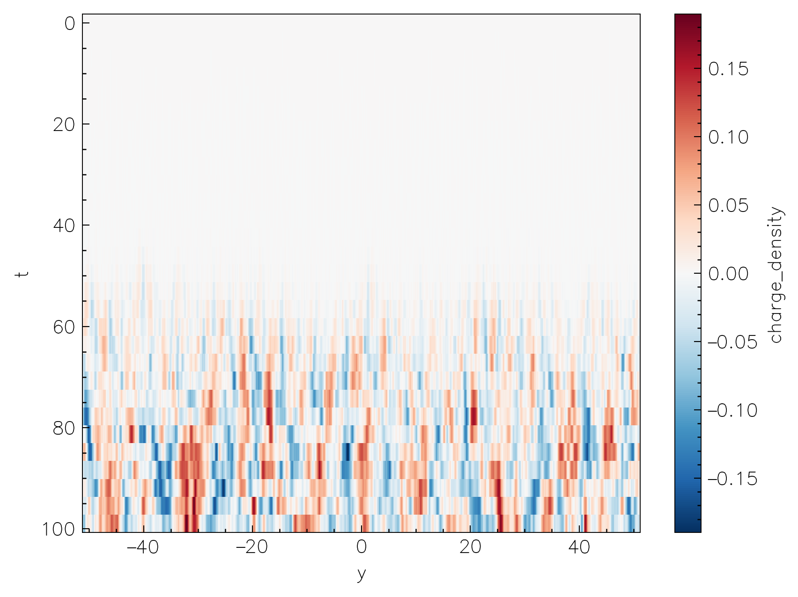
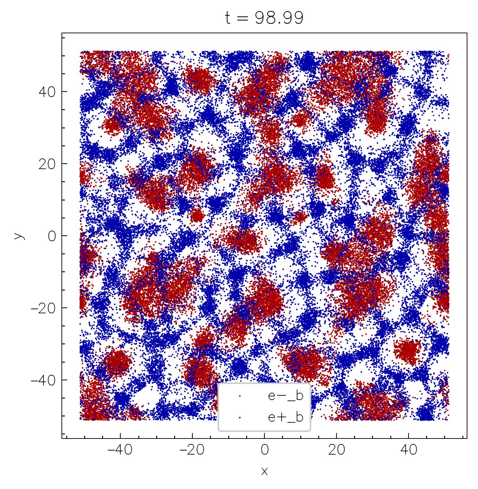
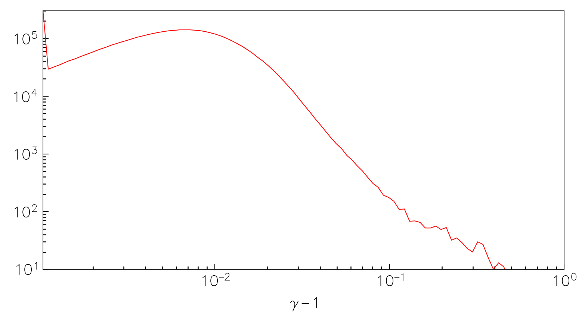

Output & visualization¶
To enable the runtime output of the simulation data, configure the code with the -D output=ON flag. As a backend Entity uses the open-source ADIOS2 library compiled in-place. The output is written in the HDF5 format, however, more formats will be added in the future.
The output is configured using the following configurations in the input file:
[simulation]
name = "MySimulation" # (5)!
# ...
[output]
format = "hdf5" # (2)!
interval = 100 # (3)!
interval_time = 0.1 # (8)!
separate_files = true # (15)!
[output.fields]
quantities = ["B", "E", "Rho_1_2", "..."] # (1)!
stride = 2 # (9)!
mom_smooth = 2 # (4)!
[output.particles]
species = [1, 2, 4] # (7)!
stride = 10 # (6)!
[output.spectra]
e_min = 1e-2 # (12)!
e_max = 1e3
log_bins = true # (13)!
[output.stats]
quantities = ["N", "Npart", "ExB", "J.E"] # (14)!
[output.debug]
as_is = false # (10)!
ghosts = false # (11)!
- fields to write
- output format (current supported: "HDF5", or "disabled" for no output)
- output interval (in the number of time steps)
- smoothing stencil size for moments (in the number of cells) [defaults to 1]
- title is used for the output filename
- stride used for particle output (write every
prtl_stride-th particle) [defaults to 100] - particle species to output
- output interval in time units (overrides
intervalif specified) - stride used for field output (write every
fields_stride-th cell) [defaults to 1] - write the field quantities as-is (without conversion/interpolation) [defaults to false]
- write the ghost cells [defaults to false]
- Min/max energies for binning the energy distribution [default to 1e-3 -> 1e3]
- whether to use logarithmic energy bins or linear
- box reduced quantities to output as stats
- whether to write in a single file or into separate files
Output is written in the run directory either in a single hdf5 file, MySimulation.h5, or in the directory with the same name MySimulation.
Following is the list of all supported fields
| Field name | Description | Normalization |
|---|---|---|
E |
Electric field (all components) | \(B_0\) |
B |
Magnetic field (all components) | \(B_0\) |
D |
GR: electric field (all components) | \(B_0\) |
H |
GR: aux. magnetic field (all components) | \(B_0\) |
J |
Current density (all components) | \(4\pi q_0 n_0\) |
Rho |
Mass density | \(m_0 n_0\) |
Charge |
Charge density | \(q_0 n_0\) |
N |
Number density | \(n_0\) |
V 1.2.0 |
Mean 3-velocity | dimensionless |
Nppc |
Raw number of particles per cell | dimensionless |
Nppc |
Raw number of particles per cell | dimensionless |
Tij |
Energy-momentum tensor (all components) | \(m_0 n_0\) |
divE 1.2.0 |
Divergence of \(E\) | arb. units |
divD 1.2.0 |
GR: divergence of \(D\) | arb. units |
A |
GR: 2D vector potential \(A_\varphi\) | arb. units |
and particle quantities
| Particle quantity | Description | Units |
|---|---|---|
X |
Coordinates (all components) | physical |
U |
Four-velocities (all components) | dimensionless |
W |
Weights | dimensionless |
1.2.0 The code also has an output of box-averaged stats into a .csv file, which are simply scalars per each output timestep. The following quantities can be computed
| Box-reduced quantity | Description | Units |
|---|---|---|
E2 |
Total \(E^2\) | \(B_0^2\) |
B2 |
Total \(B^2\) | \(B_0^2\) |
ExB |
Total \(\bm{E}\times \bm{B}\) | \(B_0^2\) |
J.E |
Total \(\bm{J}\cdot \bm{E}\) | \(4\pi q_0 n_0 B_0\) |
N |
Total \(n\) | \(n_0\) |
Npart |
Total # of particles | dimensionless |
Rho |
Total mass density | \(m_0 n_0\) |
Charge |
Total charge density | \(q_0 n_0\) |
Tij |
Energy-momentum tensor (all components) | \(m_0 n_0\) |
Refining moments for the output
One can specify particular components to output for the Tij fields/stats: T0i will output the T00, T01, and T02 components, while Tii will output only the diagonal components: T11, T22, and T33, and Tij will output all the 6 components. For quantities computed from particles (moments of the distribution), one can also specify the particle species which will be used to compute the moments: Rho_1 (density of species 1), N_2_3 (number density of species 2 and 3), Tij_1_3 (energy-momentum tensor for species 1 and 3), etc.
All of the vector fields are interpolated to cell centers before the output, and converted to orthonormal basis. The particle-based moments are smoothed with a stencil (specified in the input file; mom_smooth) for each particle.
In addition, one can write custom user-defined field quantities to the output with the fields or stats. Refer to the following section for more details.
Can one track particles at different times?
Particle tracking (outputting the same batch of particles at every timestep) is unfortunately not yet implemented, and will unlikely be available due to limitations imposed by the nature of GPU computations.
nt2py¶
We provide the nt2py python package to help easily access and manipulate the simulation data. nt2py package uses the dask and xarray libraries together with h5py and h5pickle to lazily load the output data and provide a convenient interface for the data analysis and quick visualization.
To start using nt2py, it is recommended to create a python virtual environment and install the required packages:
python3 -m venv .venv
source .venv/bin/activate # (1)!
pip install nt2py # (2)!
- Now all the packages will be installed in the
.venvdirectory which you can remove at any time without affecting the system. - If you plan to use jupyter you might also need to run the following
pip install jupyterlab ipykernel.
Now simply import the nt2 module and load the output data:
import nt2
data = nt2r.Data(path="MySimulation.h5", single_file=True) # (1)!
# or if saving as multiple files
data = nt2r.Data(path="MySimulation")
- Note, that even though the
h5file can be quite large, the data is loaded lazily, so the memory consumption is minimal; data chunks are only loaded when they are actually needed for the analysis or visualization.
Accessing fields¶
Data selection is conveniently done with the sel and isel methods for the xarray Datasets (more info). For example, to select the Rho field around physical time t=98, one can do:
data.fields.Rho.sel(t=98, method="nearest") # (1)!
- The
method="nearest"is used to select the closest time step to the requested time.

We can then plot the selected data using the plot method of the xarray Dataset:
data.fields.Rho\
.sel(t=98, method="nearest")\
.plot(
norm=mpl.colors.Normalize(0, 1e2), # (2)!
cmap="jet") # (1)!
- The
normandcmaparguments are used to set the colorbar limits and the colormap just like in normalmatplotlibcontext. - Make sure to also
module load matplotlib as mpl.
If the resolution is too high, one can also coarsen the data before plotting:
data.fields.Rho\
.sel(t=98, method="nearest")\
.coarsen(x=16, y=4).mean()\
.plot(
norm=mpl.colors.Normalize(0, 1e2),
cmap="jet")
or downsample:
data.fields.Rho\
.sel(t=98, method="nearest")\
.isel(x=slice(None, None, 16), y=slice(None, None, 4))\ # (1)!
.plot(
norm=mpl.colors.Normalize(0, 1e2),
cmap="jet")
- The difference between
iselandselis thatiseluses the integer indices along the given dimension, whileseluses the physical coordinates.

One can also do more complicated things, such as building a 1D plot of the evolution of the mean \(B^2\) in the box:
data.fields.Bx**2 + data.fields.By**2 + data.fields.Bz**2\
.mean(("x", "y"))\
.plot()
or make "waterfall" plots, collapsing the quantity along one of the axis, and plotting vs the other axis and time:
(data.fields.Rho_2 - data.fields.Rho_1)\
.mean("x")\
.plot(yincrease=False)
Particles and spectra can, in turn, be accessed via data.particles[s], where s is the species index, and data.spectra.
nt2py documentation
You can access the documentation of the nt2py functions and methods of the Data object by calling nt2r.<function>? in the jupyter notebook or help(nt2r.<function>) in the python console.
Accessing particles¶
Particles are stored in the same data object and are lazily preloaded when one calls nt2.Data(...), as we did above. To access the particle data, use data.particles, which returns a python dictionary where the key is particles species index, and the value is an xarray Dataset with the particle data. For example, to access the x and y coordinates of the first species, one can do:
data.particles[1].x
data.particles[1].y
The shape of the returned dataset is number of particles times the number of time steps. To select the data at a specific time step, one can use the same sel or isel methods mentioned above. For example, to access the 10-th output timestep of the 3-rd species, one can do:
data.particles[3].isel(t=10).x
Scatter plotting the particles on a 2D plane is quite easy, since xarray has a built-in plot.scatter method:
species_3 = data.particles[3]
species_4 = data.particles[4]
species_3.isel(t=-1)\
.plot.scatter(x="x", y="y",
label=species_3.attrs["label"])
species_4.isel(t=-1)\
.plot.scatter(x="x", y="y",
label=species_4.attrs["label"])
scatter plot \(\{x,~y\}\)

isel indexing
isel(t=-1) selects the last time step.
Or one can plot the same in phase space:
species_3.isel(t=-1)\
.plot.scatter(x="ux", y="uy",
label=species_3.attrs["label"])
species_4.isel(t=-1)\
.plot.scatter(x="ux", y="uy",
label=species_4.attrs["label"])
scatter plot \(\{u_x,~u_y\}\)

Accessing runtime spectra¶
Distribution functions for all particle species in the box are also written with the data at specified timesteps. These can be accessed via data.spectra, which has several different fields. As in particles & fields, you can access the data at different times using data.spectra.isel(t=...) or data.spectra.sel(t=...). The energy bins are written into data.spectra.e; by default, the binning is done logarithmically in \(\gamma - 1\) for massive particles and energy, \(E\), for the photons. Below is an example script to build a distribution function of electron-positron pairs at output step t=450:
sp = data.spectra.isel(t=450)
plt.figure(figsize=(6, 3))
plt.xscale("log")
plt.yscale("log")
plt.plot(sp.e, sp.n_1 + sp.n_2, c="r")
plt.ylim(10, 3e5)
plt.xlabel(r"$\gamma - 1$")
plt.xlim(sp.e.min(), 1)
particle spectra

Exporting movies¶
To produce animations, nt2py provides a shortcut helper function which saves the frames using multiple threads, and then calls ffmpeg to merge them into a video file.
def plot_frame(ti, data):
# function must take two parameters:
# - ti: output index
# - data: the dataset loaded with nt2.read
#
# any type data manipulation & plotting routine goes here
# e.g.
fig = plt.figure()
ax = fig.add_subplot(111)
(data.N_1 + data.N_2).isel(t=ti).plot(ax=ax, cmap="viridis")
# ^
# selecting timestep by index
# then simply pass this function to the routine:
data.makeMovie(plot_frame, num_cpus=8, framerate="10", ...)
# ^
# (optional) by default all available threads are used
makeMovie also accepts a number of arguments used by ffmpeg, such as the framerate, the compression rate, etc. Run the following to see all the arguments:
import nt2.export as nt2e
nt2e.makeMovie?